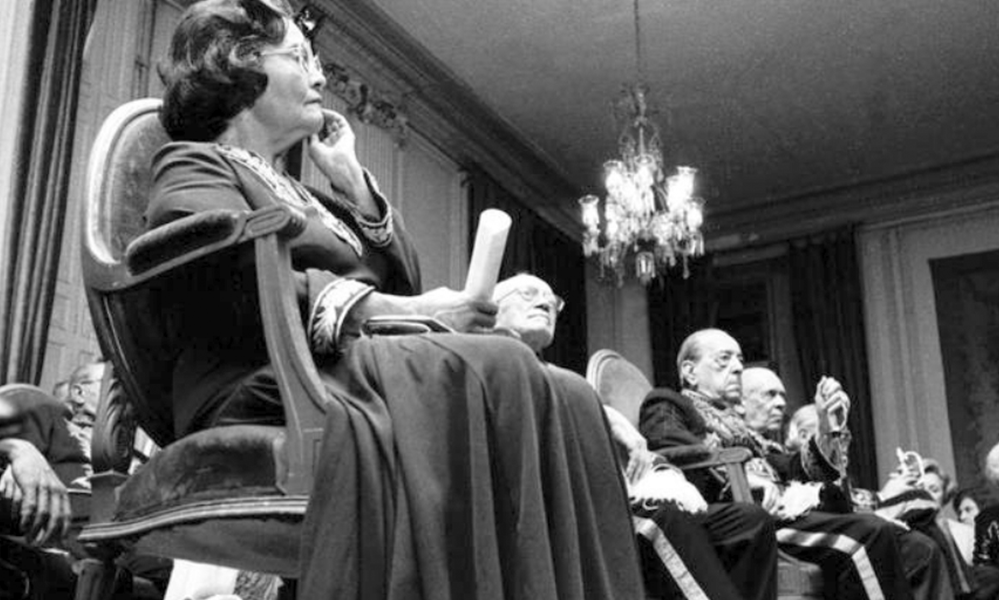

Título Bafão da Maravilhosa
Autora de destaque na ficção social nordestina, nascida em Fortaleza- Ceará, foi a primeira mulher a ingressar na Academia Brasileira de Letras em 1977, foi a primeira mulher galardoada com o Prêmio Camões.
Ingressou na Academia Cearense de Letras no dia 15 de agosto de 1994, na ocasião do centenário da instituição.
Eu nunca fui uma moça bem-comportada. Pudera, nunca tive vocação pra alegria tímida, pra paixão sem orgasmos múltiplos ou pro amor mal resolvido sem soluços. Eu quero da vida o que ela tem de cru e de belo. Não estou aqui pra que gostem de mim. Estou aqui pra aprender a gostar de cada detalhe que tenho.
— Rachel de Queiroz
Sua História
Rachel era filha de Daniel de Queiroz Lima e Clotilde Franklin de Queiroz, descendente pelo lado materno da família de José de Alencar. Em 1915, após uma grande seca, muda-se com seus pais para o Rio de Janeiro e logo depois para Belém do Pará. Retornou para Fortaleza dois anos depois.
Aos dezenove anos, ficou nacionalmente conhecida ao publicar O Quinze (1930), romance que mostra a luta do povo nordestino contra a seca e a miséria.
Demonstrando preocupação com questões sociais e hábil na análise psicológica de seus personagens, destaca‐se no desenvolvimento do romance nordestino.
A obra foi escrita quando a autora contraiu uma congestão pulmonar e, com suspeita de tuberculose, foi obrigada a ficar em repouso. Durante esse tempo, escreveu o romance escondida à noite.

Academia Brasileira de Letras
Concorreu contra o jurista Pontes de Miranda para a vaga de Cândido Mota Filho da cadeira 5 da Academia Brasileira de Letras. Venceu o pleito ocorrido em 4 de agosto de 1977 por 23 votos, contra 15 dados ao opositor e um em branco.
Foi empossada em 4 de novembro de 1977. Recebida por Adonias Filho, foi a quinta ocupante da cadeira 5, que tem como patrono Bernardo Guimarães.
Foi a primeira mulher a ingressar na ABL.
Autora: Dandara Sousa
Front-End Denveloper